전자계산기제어산업기사(구) (2002-05-26 기출문제)
1과목: 프로그래밍일반
1. C 언어에 대한 설명으로 옳지 않은 것은?
- 구조적 프로그래밍이 가능하다.
- 시스템 소프트웨어를 작성하기에 편리하다.
- 기계어에 해당한다.
- 이식성이 높은 언어이다.
(정답률: 알수없음)

2. 시스템 프로그래밍 언어에 가장 적합한 것은?
- pascal
- cobol
- c
- basic
(정답률: 알수없음)
3. 운영체제의 성능 평가 항목으로 거리가 먼 것은?
- 처리 능력(throughput)
- 비용(cost)
- 사용가능도(availability)
- 반환시간(turn-around time)
(정답률: 알수없음)
4. 운영체제를 수행 기능에 따라 분류할 경우 제어 프로그램에 해당하지 않는 것은?
- 감시 프로그램
- 데이터 관리 프로그램
- 작업 제어 프로그램
- 문제 프로그램
(정답률: 알수없음)
5. 구조적 프로그램의 기본 구조가 아닌 것은?
- 순차(sequence)구조
- 조건(condition)구조
- 일괄(batch)구조
- 반복(repetition)구조
(정답률: 알수없음)
6. 작성된 표현식이 BNF의 정의에 의해 바르게 작성되었는지를 확인하기 위해 만들어진 tree의 명칭은?
- parse tree
- binary search tree
- binary tree
- skewed tree
(정답률: 알수없음)
7. C 언어의 데이터 형식에 해당하지 않는 것은?
- double
- long
- char
- signed
(정답률: 알수없음)
8. 절대로더에서 기능과 그 행위 주체의 연결이 옳지 않은 것은?
- 할당- 프로그래머
- 연결- 로더
- 재배치-어셈블러
- 적재-로더
(정답률: 알수없음)
9. 로더의 기능이 아닌 것은?
- allocation
- linking
- compile
- loading
(정답률: 알수없음)
10. 단항연산자(unary) 연산에 해당하는 것은?
- and
- or
- complement
- xor
(정답률: 알수없음)
11. 시간 구역성(temporal locality)의 예가 아닌 것은?
- 순환(looping)
- 부프로그램(subprogram)
- 배열 순례(array traversal)
- 스택(stack)
(정답률: 알수없음)
12. 정적 바인딩에 해당하지 않는 것은?
- 언어정의시간
- 언어구현시간
- 실행시간
- 링크시간
(정답률: 알수없음)
13. BNF 표기법 기호 중 "정의된다"를 의미하는 것은?
- ::=
- |
- < >
- { }
(정답률: 알수없음)
14. 이산적인 입력과 출력에 유한 수의 내부상태를 가진 시스템의 수학적 모델을 무엇이라 하는가?
- 유한 오토마타
- 정규문법
- 정규언어
- 컴파일러
(정답률: 알수없음)
15. 문자열 대치, 복사, 치환 등과 같은 문자열의 조작을 편리하게 수행할 수 있도록 여러 가지 기능을 제공하며, 스트림 자료 활용의 예가 많은 언어는?
- SNOBOL
- C
- PL/1
- ADA
(정답률: 알수없음)
16. 두 개의 피연산자를 취하는 이항(binary) 연산자 표현에 적합하며, 연산 기호가 두 피연산자 사이에 놓여지는 표기법은?
- 전위
- 후위
- 복합
- 중위
(정답률: 알수없음)
17. 구조화 프로그램을 설계하기 위한 설명으로 옳지 않은 것은?
- 프로그램의 이해가 쉽고 디버깅 작업이 쉽도록 한다.
- 한 개의 입구와 한 개의 출구 구조를 갖도록 한다.
- 실행시간의 단축을 위해 GOTO 문을 가급적 많이 사용한다.
- 계층적 설계를 한다.
(정답률: 알수없음)
18. 상향식(bottom-up) 파서에 해당하는 것은?
- Predictive parser
- LL parser
- Recursive descent parser
- Shift reduce parser
(정답률: 알수없음)
19. 서브루틴 호출(subrutine call) 처리 작업시 복귀주소를 저장하고 조회하는 용도에 적합한 자료 구조는?
- 데크
- 큐
- 스택
- 연결리스트
(정답률: 알수없음)
20. 프로그램 언어의 실행 과정으로 옳은 것은?
- 로더-링커-컴파일러
- 컴파일러-로더-링커
- 링커-컴파일러-로더
- 컴파일러-링커-로더
(정답률: 알수없음)
2과목: 전자계산기구조
21. 레지스터의 기본 회로는?
- 증폭기
- 플립플롭
- 변조기
- 발진기
(정답률: 알수없음)
22. 부호화된 데이터로부터 정보를 찾아내는 조합논리회로는?
- Flip-Flop
- Decoder
- Encoder
- Adder
(정답률: 알수없음)
23. 산술연산과 논리연산 동작을 수행한 후 결과를 축적하는 레지스터는?
- 누산기
- 인덱스 레지스터
- 플래그 레지스터
- RAM
(정답률: 알수없음)
24. 8 비트로 나타낸 부호와 2의 보수 표현 –3610을 좌측으로 한 비트 산술 시프트 하면 그 결과는?
- 11011100
- 10111000
- 01000111
- 11101100
(정답률: 알수없음)
25. 인터럽트 사이클의 마이크로동작 중에서 옳지 않은 것은?
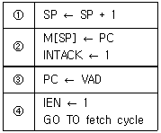
- ①
- ②
- ③
- ④
(정답률: 알수없음)
26. 명령(instruction)이 실행되기 위해 가장 우선적으로 처리 되어야 하는 마이크로 오퍼레이션은?
- PC → MAR
- PC → MBR
- PC → CPU
- PC → M
(정답률: 알수없음)
27. 컴퓨터의 메모리 용량이 64K × 32bit라 하면 MAR(Memory Address Register)와 MBR(Memory Buffer Register)는 각각 몇 비트인가?
- MAR:16, MBR:16
- MAR:32, MBR:16
- MAR: 8, MBR:16
- MAR:16, MBR:32
(정답률: 알수없음)
28. 가상기억체제에 대한 설명으로 옳지 않는 것은?
- 컴퓨터의 속도는 문제시 되지 않는다.
- 주소 공간의 확대가 그 목적이다.
- 사용할 수 있는 보조 기억장치는 DASD 이어야 한다.
- 보조 기억장치로는 자기테이프가 많이 사용된다.
(정답률: 알수없음)
29. 주소지정방식 중 속도가 빠른 순서대로 나열한 것은?
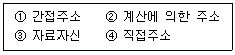
- ④-①-②-③
- ③-②-④-①
- ③-④-②-①
- ④-③-②-①
(정답률: 알수없음)
30. 인터럽트의 발생 원인이 아닌 것은?
- 오버플로우(overflow) 발생
- 정전
- 오퍼레이터(operator)의 조작
- 서브 프로그램 호출
(정답률: 알수없음)
31. 16비트로 2의 보수법을 사용하여 표현할 때 최대로 표현할 수 있는 정수(N)의 범위는?
- -216 ≤ N ≤ 216-1
- -215 ≤ N ≤ 215-1
- 0 ≤ N ≤ 232
- 0 ≤ N ≤ 232-1
(정답률: 알수없음)
32. CPU의 명령을 받고 입曺출력 조작을 개시하면 CPU와는 독립적으로 조작을 하는 것은?
- Register
- Channel
- Terminal
- Buffer
(정답률: 알수없음)
33. 입력 번지선이 4개, 출력 Data 선이 8개인 ROM의 기억 용량은?
- 8 byte
- 16 byte
- 32 byte
- 64 byte
(정답률: 알수없음)
34. 다음 logic diagram의 Boolean expression은?
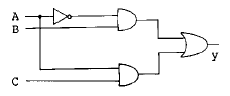
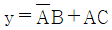
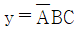
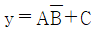
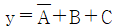
(정답률: 알수없음)
35. 11110001을 2의 보수로 나타내고 이것을 10진수로 표시하면?
- 00001111 및 +15
- 00001111 및 -15
- 00001110 및 -13
- 00001110 및 +13
(정답률: 알수없음)
36. 하나의 입력 자료를 ALU가 처리하는 연산을 의미하는 것은?
- unary 연산
- floating-point 연산
- binary 연산
- fixed-point 연산
(정답률: 알수없음)
37. 다음에서 인터럽트 작동순서가 올바른 것은?
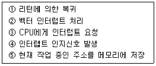
- ③-⑤-④-②-①
- ④-③-⑤-②-①
- ⑤-②-③-①-④
- ①-③-④-⑤-②
(정답률: 알수없음)
38. 마이크로프로그램에 대한 설명 중 옳지 않은 것은?
- 마이크로프로그램은 소프트웨어 라고 하는 것보다 하드웨어적인 요소가 많아 펌웨어(firmware) 라고도 불린다.
- 제어기를 구성하는 방법으로 마이크로프로그램이 이용될 수 있다.
- 마이크로프로그램은 전자계산기의 제작 단계에서 컨트롤 스토리지(control storage) 속에 저장한다.
- 마이크로프로그램은 마이크로 명령으로 형성되어 있다.
(정답률: 알수없음)
39. 인터럽트 처리 과정 중 인터럽트를 소프트웨어로 판별하는 방법은?
- 폴링
- 벡터 인터럽트
- 스택
- 핸드쉐이킹
(정답률: 알수없음)
40. 보조 기억장치로 사용되지 않는 것은?
- 자기 테이프
- RAM
- 자기 디스크
- 자기 드럼
(정답률: 알수없음)
3과목: 마이크로전자계산기
41. 마이크로컴퓨터의 구성 요소가 아닌 것은?
- microprocessor
- RAM
- ROM
- channel
(정답률: 알수없음)
42. 어드레스 버스(Address Bus)로 부터 받은 주소 내용에 의해 해당 메모리 chip을 선택 하는데 이 때 해당번지를 찾는 해독기로 쓰이는 소자는?
- Flip-Flop
- Multiplexer
- Decoder
- Encoder
(정답률: 알수없음)
43. 입·출력 프로세서(IOP : Input - output – Processor)의 채널(channel) 종류로서 일반적으로 사용되지 않는 것은?
- 멀티플렉서 채널(multiplexer channel)
- 셀렉터 채널(selector channel)
- 블럭 멀티플렉서 채널(block multiplexer channel)
- 심플렉스 채널(simplex channel)
(정답률: 알수없음)
44. 컴퓨터 본체와 주변장치 사이의 데이터 전송 방식에 해당되지 않는 것은?
- 프로그램 제어에 의한 데이터 전송
- DMA에 의한 데이터 전송
- 서브루틴에 의한 데이터 전송
- 인터럽트에 의한 데이터 전송
(정답률: 알수없음)
45. 컴퓨터의 처리 속도를 향상시키기 위해 사용하는 목적과 관계가 적은 것은?
- DMA(direct memory access)
- PLA(programmable logic array)
- cache memory
- CAM(content-addressable memory)
(정답률: 알수없음)
46. 직렬 액세스(Serial access Memory)에서 기억 밀도가 1cm당 8 Kbit이고, 회전 속도가 50cm/sec이면 트랙(track)의 정보 전송률은 초 당 몇 bit인가?
- 100 Kbit
- 200 Kbit
- 400 Kbit
- 800 Kbit
(정답률: 알수없음)
47. 현재 수행되고 있는 연산에서 사용되는 메모리 위치 또는 I/O장치의 어드레스를 저장하는 역할을 하는 레지스터는?
- Data register
- MAR
- Accumulator
- Program Counter
(정답률: 알수없음)
48. 중앙처리 장치(CPU)의 동작 시간을 설명한 것 중 시간이 가장 짧은 것은?
- instruction cycle
- machine cycle
- execution cycle
- machine state
(정답률: 알수없음)
49. 어셈블리 어 중에 어셈블러에 의해서 기계어로 번역되지 않는 명령은?
- 로드(Load) 명령
- 의사(Pseudo) 명령
- 입·출력(Input/Output) 명령
- 점프(Jump) 명령
(정답률: 알수없음)
50. 핸드쉐이크 통신 방식의 설명과 관계가 먼 것은?
- 동기 방식에 비해 통신 속도가 빠르다.
- 1개의 데이터를 송출할 때마다 확인한다.
- 데이터를 보낼 때 스트로브 신호와 함께 보낸다.
- ACK(acknowledge)신호는 수신측에서 확실히 수신되었음을 표시한다.
(정답률: 알수없음)
51. 프로그램을 위해 기억장소 할당 기능을 가진 시스템 소프트웨어는?
- 어셈블러
- 로더(loader)
- 일괄처리 운영체제
- 스케쥴러(scheduler)
(정답률: 알수없음)
52. 4096 × 1bit의 반도체 RAM 칩을 이용하여 16 Kbyte의 기억장치를 구성하기 위해 필요한 칩의 수는 몇 개인가?
- 16
- 32
- 64
- 128
(정답률: 알수없음)
53. 한 컴퓨터가 다른 컴퓨터처럼 똑같이 동작하도록, 소프트웨어나 마이크로프로그램을 사용하는 기법은?
- Loader
- Emulator
- Compiler
- Editor
(정답률: 알수없음)
54. 접근(access) 시간을 줄이기 위해 기억장치를 모듈로 나누어 병렬로 접근할 수 있도록 하는 것은?
- 인터리빙
- 멀티플렉서
- 셀렉터
- 복수 모듈
(정답률: 알수없음)
55. MPU의 기능 중 가장 기본적인 것은?
- FETCH와 EXECUTE
- SEARCH와 LOAD
- 연산과 비교
- MOVE와 TRANS
(정답률: 알수없음)
56. 입·출력 인터페이스(I/O interface)의 기능을 설명한 것 중 옳지 않은 것은?
- 데이터(Data)의 한 단위를 저장할 수 있는 버퍼를 제공해 준다.
- 컴퓨터가 주소를 지정할 시기를 결정하기 위한 주소 인코딩(address encoding) 회로가 있다.
- 버스 제어에 필요한 적당한 시간 신호가 생성되어야 한다.
- 입·출력 버스와 장치 사이에 전송되는 데이터의 변환 기능이 필요하다.
(정답률: 알수없음)
57. 양방향성(bidirectional) 버스는?
- 주소 버스
- 제어 버스
- ALU 버스
- 데이터 버스
(정답률: 알수없음)
58. 데이지 체인(daisy-chain) 우선순위 인터럽트 방법이란?
- Polling
- DMA
- 인터럽트를 발생하는 모든 장치를 우선 순위별 직렬로 연결하여 이루어지게 한다.
- 인터럽트를 발생하는 모든 장치를 병렬로 연결하여 이루어지게 한다.
(정답률: 알수없음)
59. 어떤 컴퓨터에서 MAR(Memory Address Register)이 12비트로 되어 있다면 메모리 장치가 포함할 수 있는 워드 수는 모두 몇 개인가?
- 1,024 개
- 4,096 개
- 16,384 개
- 65,536 개
(정답률: 알수없음)
60. 명령 코드가 명령을 수행할 수 있게 필요한 제어함수를 제공하여 주는 장치는?
- 동작 코드
- 제어 장치
- 오퍼랜드
- 번지 필드(field)
(정답률: 알수없음)
4과목: 논리회로
61. 용량이 1024 어(Word)인 기억시스템에서 2진수로 된 번지(Address) 어는 몇 비트가 되어야 하는가?
- 5
- 10
- 15
- 20
(정답률: 알수없음)
62. 다음 그림의 회로와 관계가 없는 것은?
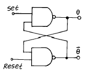
- 플립-플롭의 기본 회로이다.
- R=S=0이 동시에 일어나면
 로 된다.
로 된다. - 래치(Latch) 회로라고 한다.
- 1-Bit의 기억소자이다.
(정답률: 알수없음)
63. 마스터슬레이브 JK 플립플롭을 사용하는 이유는?
- 지연시간을 짧게하기 위해
- 지연시간을 길게하기 위해
- 클럭펄스를 사용할 수 없을 때
- 레이싱(racing) 현상을 없애기 위해
(정답률: 알수없음)
64. 반 가산기를 논리적으로 표시하면? (단, S=합, C=Carry, A, B는 입력이다.)
 , C=AB
, C=AB , C=AB
, C=AB , C=A+B
, C=A+B , C=A+B
, C=A+B
(정답률: 알수없음)
65. 모드-6 카운터를 구성하기 위한 플립플롭의 최소 수는?
- 2
- 3
- 4
- 5
(정답률: 알수없음)
66. 101101에 대한 2의 보수(補數)는?
- 101110
- 010010
- 010001
- 010011
(정답률: 알수없음)
67. 12비트 2진 입력 D/A 변환기의 분해능은?
- 1/212
- 1/26
- 1/23
- 1/2
(정답률: 알수없음)
68. 컴퓨터에서 보수를 사용하는 이유는?
- 제산에서의 불필요한 과정을 제거시키기 위한 법
- 가산의 결과를 체크하기 위한 법
- 감산에서 보수를 가산법으로 처리하기 위한 법
- 승산에서 연산 과정을 간단히 하기 위한 법
(정답률: 알수없음)
69. 세입력 중(X,Y,Z) 어떤 입력이던 두입력 이상이 정논리(Logical-one)일 때 출력이 정논리(Logical-one)가 되는 회로를 설계할 때의 논리식은?
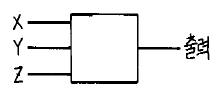
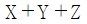
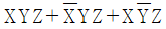
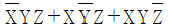
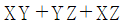
(정답률: 알수없음)
70. 불식
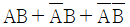
를 간단화 한 식은?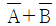
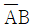
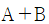
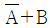
(정답률: 알수없음)
71. 다음 NAND gate로 구성된 회로와 등가인 gate는?
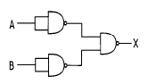
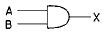
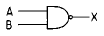
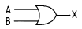
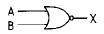
(정답률: 알수없음)
72. Data 통신에 가장 많이 사용되는 코드는?
- BCD 코드
- ASCII 코드
- EBCDIC 코드
- Gray 코드
(정답률: 알수없음)
73. 아래에서
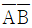
를 드모르간의 정리에 의해서 올바르게 변환시킨 회로는?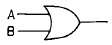
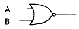
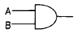
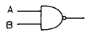
(정답률: 알수없음)
74. 인에이블 입력을 가지고 있는 디코더는 다음의 예 중 어느 것으로 사용될 수 있는가? (단, 그림에서 AB 입력과 enable을 바꾸어서 사용)
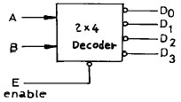
- Encoder
- Multiplexer
- Demultiplexer
- ROM
(정답률: 알수없음)
75. 다음표는 각 플립플롭의 여기표이다. 옳지 않은 것은? (단, Q(t)는 현재 상태이고, Q(t+1)은 다음 상태이다.)
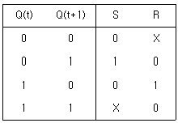
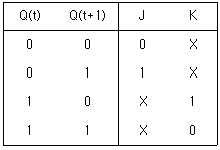
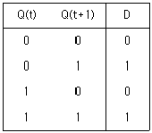
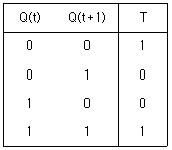
(정답률: 알수없음)
76. 논리식 중 성립되지 않는 것은?
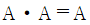
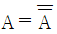
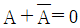
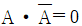
(정답률: 알수없음)
77. 데이터를 일시 저장할 수 있는 것은?
- 제너레이터
- 레지스터
- 인코더
- 전원 공급장치
(정답률: 알수없음)
78. 그림과 같은 논리회로의 기능은 어떤 게이트인가? (단, X : exclusive의 약자임)
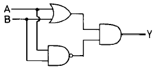
- NAND 게이트
- XOR 게이트
- XNOR 게이트
- NOR 게이트
(정답률: 알수없음)
79. 십진수를 표현하는 2진 코드(binary code)들 중 자기 보수화(self-complementary)가 불가능한 코드는?
- 2424 코드
- 5111 코드
- Excess-3 코드
- BCD(8421) 코드
(정답률: 알수없음)
80. 전가산기 회로에는 (A)개의 입력과 (B)개의 출력이 있다. 알맞는 것은?
- A=3, B=1
- A=2, B=3
- A=3, B=2
- A=2, B=1
(정답률: 알수없음)
5과목: 정보통신개론
81. 정보통신시스템이 수행하는 처리방식으로 틀린 것은?
- 거래처리방식
- 시간공유처리방식
- 주파수분할처리방식
- 원격일괄처리방식
(정답률: 알수없음)
82. 다음 중 트랜스포트 계층에 대한 설명중 거리가 먼 것은?
- 응용프로세스에게 일정한 전송 품질(Qos)을 제공하기 위한 기능이다.
- 네트워크를 5개의 타입으로 나누고 적절한 오류제어 기능을 수행한다.
- Class 0의 경우 기본 커널 기능만 수행한다.
- 네트워크 Type에 따라 다양한 서비스의 품질(Qos)을 제공한다.
(정답률: 알수없음)
83. 다음 중 ISDN 채널의 종류와 전송속도와의 관계를 나타낸 것으로서 옳지 않은 것은?
- B채널 : 64Kbps
- H0채널 : 384Kbps
- D채널 : 128Kbps
- H11채널 : 1536Kbps
(정답률: 알수없음)
84. 다음 중 정보통신관련 국제표준기구가 아닌 것은?
- IMO
- ISO
- ITU
- IEC
(정답률: 알수없음)
85. 다음 중에서 아날로그 변조방법이 아닌 것은?
- 진폭변조
- 주파수변조
- 위상변조
- 채널변조
(정답률: 알수없음)
86. 현재의 라디오나 공중파 TV방송에 적용되는 통신방식은?
- 단향통신
- 전이중통신
- 반이중통신
- 우회통신
(정답률: 알수없음)
87. 정보통신 시스템의 기본 구성 요소가 아닌 것은?
- 통신회선
- 단말장치
- 신호변환기
- 구내교환기
(정답률: 알수없음)
88. LAN에서 사용되는 매체 엑서스 제어(Access Control) 기법이 아닌 것은?
- 토큰버스
- CDMA/CD
- CSMA/CD
- 토큰링
(정답률: 알수없음)
89. ISDN을 사용하는 경우 얻어지는 특징이 아닌 것은?
- 사용자는 단일/복수의 다른 사용자와 동시에 교대로 음성, 문자, 데이터 통신 서비스를 제공받는다.
- 단일 가입자 번호로 다양한 종류의 서비스를 적은 비용으로 제공받을 수 있다.
- 초고속망용이므로 저속용 전화, FAX, DATA, CATV 등의 통신 서비스를 제공받기가 어려워진다.
- 통신망 운용자도 많은 부가가치를 얻을 수 있다.
(정답률: 알수없음)
90. 베어러(bearer)속도의 단위는?
- bit/sec
- baud
- block/sec
- character/sec
(정답률: 알수없음)
91. 정보제공시 통신회선을 기간통신사업자로 부터 임차하여 사설망을 구축하고 이를 이용, 축적해 놓은 정보를 유통시키는 정보통신 서비스망은?
- LAN
- MAN
- VAN
- WAN
(정답률: 알수없음)
92. 광통신의 장점으로 맞지 않은 것은?
- 세심경량성
- 광대역성
- 고속성
- 전기적 유도성
(정답률: 알수없음)
93. 정보통신망(전산망) 상호간을 연결할 때 시설, 운영 및 유지, 보수의 책임한계를 구분하기 위한 접속점을 무엇이라고 하는가?
- 연결점
- 구분점
- 분기점
- 분계점
(정답률: 알수없음)
94. 비트 위주의 프로토콜인 HDLC(High-level Data Link Control)의 특징이 아닌 것은?
- 점대점 및 멀티포인트에서 사용
- 반이중과 전이중 통신 모두 지원
- 동기식 전송방식 사용
- 사용하는 문자코드에 의존성
(정답률: 알수없음)
95. ISO에서 규정한 LAN의 프로토콜 중 논리 링크 제어 및 매체액세스 제어를 담당하고 있는 계층은 OSI 개방시스템의 어느 게층에 속하는가?
- 프리젠테이션 계층
- 세션 계층
- 데이타링크 계층
- 네트워크 계층
(정답률: 알수없음)
96. 다음 중 통신 채널의 효율적 이용을 위해 사용되는 데이터 압축 방식이 아닌 것은?
- 허프만(Huffman) 압축 기법
- LZW(Lempel-Ziv-Welch) 압축 기법
- MPEG(Motion Picture Experts Group) 기법
- 해밍(Hamming) 코드 압축 기법
(정답률: 알수없음)
97. 정보통신시스템의 회선 구성 방식이 아닌 것은?
- 점-대-점(Point-to-Point) 방식
- 다중점(Multi-point) 방식
- 비동기식 전송방식
- 다중화 방식
(정답률: 알수없음)
98. 광대역 ISDN 서비스의 특징으로 옳지 않은 것은?
- 신호의 전송 속도가 매우 높다.
- 서비스 신호 대역폭의 분포 범위가 넓다.
- 연속성 신호와 군집성 신호가 공존한다.
- 서비스 시간의 범위가 좁다.
(정답률: 알수없음)
99. 동기식 전송방식의 설명으로 잘못된 것은?
- 비트동기 방식과 블록동기 방식이 있다.
- 전송속도가 일반적으로 1,200[bps]를 넘지 않는 저속 전송에 사용된다.
- 실제 데이터 전송중에 동기문자를 전송한다.
- 동기문자(또는 일정 비트)는 송수신측의 동기가 목적이다.
(정답률: 알수없음)
100. 다음 중 에러를 검출하여 교정까지 할 수 있는 코드는?
- BCD 코드
- 이중5코드(biquinary code)
- EBCDIC 코드
- 해밍코드(Hamming code)
(정답률: 알수없음)